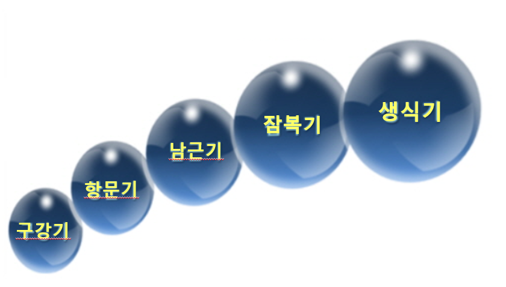
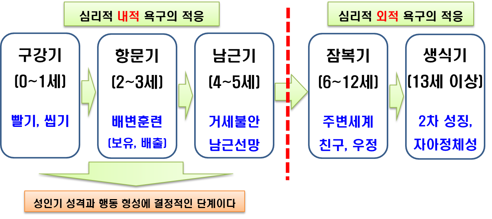
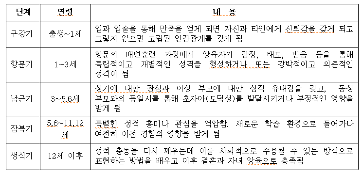

심리성적 발달 5단계
프로이드(Sigmund Freud)는 성격발달 과정에서 중요한 영향을 미치는 성 에너지인 리비도의 과잉 및 충족 또는 좌절 및 고착에 따라 성격발달에 중요한 영향을 미친다고 주장하였다.
심리성적 발달 단계를 살펴보면 다음과 같다(표- 참조).

1) 구강기
구강기(oral stage)는 출생 후 1년 사이 젖먹이 시기로 구강에 의한 쾌감이다. 이 단계는 모든 관심이 입과 입술, 혀의 감각과 활동에 초점이 집중된다. 영아가 때 아이는 엄마의 젖을 빨면서 구강 흡입의 만족을 얻거나 치아가 돋아나면서 빨고, 삼키고, 뱉고, 깨무는 것과 같은 구강 공격(aggressive drive) 성향을 나타낸다. 구강 만족이 충분하지 못하거나 과잉 충족되는 경우 구강기에 고착(fixation)이 된다.
이러한 구강기적 성격(oral personality)은 구강흡입적 행동으로 지나친 먹기, 씹기, 흡연, 음주가 나타나고, 구강공격적 행동으로 빈정거림, 험담, 비판, 애정거부 등으로 욕구를 나타낸다. 아이의 성격 특징은 의존적이고 자기중심적이지만 만족이 안되면 다른 사람을 불신하거나 소원한 관계를 형성한다. 그러나 이 시기에 자신의 욕구가 적절하게 충족되면 자신감 있고 관대하며 외부세계에 신뢰감을 지니는 안정된 성격을 형성하게 된다.
2) 항문기
항문기(anal stage)는 2~3세 운동근육과 신경이 발달하고 욕구가 구강에서 항문으로 이동한다. 아이는 이 시기에 자기 조절(self-control), 독립심， 자율성, 자존감(self-esteem)의 기초가 형성된다. 아이는 대소변을 볼 수도 있고 참을 수도 있고, 자신의 신체적 자율성(autonomy)을 경험하고 도덕적 출발점이 생긴다. 아이는 대소변이 더럽다거나 청결하다는 개념은 아직 없기 때문에 도덕규범을 내면화는 못하지만 배설욕구를 조율하기에 필요한 신경발달과 옷을 내리고 올릴 수 있는 능력이 형성된다.
아이는 부모의 태도와 말 또는 표정에서 불안과 분노, 수치심을 경험하게 되면 항문기적 성격(analpersonality)으로 투쟁적인 관계를 형성한다. 항문기에 복종을 선택할 경우 청결, 질서, 정돈, 정확성 등을 강조하는 강박적 성격(obsessive personality)과 결벽증이 나타낸다. 반항할 경우 배변을 참거나 부적절한 때에 배변을 함으로써 부모에게 저항과 난폭, 고집, 무절제, 신뢰성의 결여와 같은 성격을 발휘하게 된다. 그러나 적절한 욕구만족 경험을 경험하게 되면 독립적이고 자기주장적이며 협동적인 성격을 형성한다.
3) 남근기
남근기(phallic stage)는 4~6세경으로 아이는 성기를 만지고 자극하는데서 쾌감을 느끼는 시기이다. 아이는 이성의 부모에게 애정을 느끼고 동성의 부모에게는 질투와 경쟁적인 증오심을 느낀다. 남아는 어머니에 대한 근친상간의 성적 욕구와 아버지에게는 적대감, 질투, 경쟁자로 보기 때문에 아버지가 자신의 성기를 거세할지도 모른다는 거세불안(castration anxiety)의 두려움을 느끼게 된다.
이러한 남아의 심리적 갈등으로 오이디푸스 콤플렉스(oedipus complex)라고 한다. 이 시기의 여아도 자신의 성기(clitoris)에 관심을 갖는데 남아의 성기(penis)에 비해 열등감을 느끼고 남근 선망(penis envy)을 하게 된다. 여아의 경우 아버지에 대한 성적 욕구로 인해 어머니에게 경쟁심을 느끼는 동시에 남근이 없는 불완전한 모습으로 세상에 태어나게 한 어머니를 원망하면서 남근선망(penis envy)의 심리적 갈등인 엘렉트라 콤플렉스(electra complex)를 겪는다.
아이들은 이 단계에서 남자와 같아지려는 희망을 포기하고 아버지를 사랑하고 어머니에 대해 반감을 품게 된다. 이를 해결하기 위한 방법으로 남아나 여아 모두 자신보다 우월한 위치에 있는 아버지 또는 어머니의 가치, 규범, 도덕적 기준에 자신을 동일시(identification)하면서 초자아(superego)를 발전시킴으로써 해소된다. 아이는 자신의 이성인 아버지 또는 어머니에게 느껴지는 무의식적 근원상간 욕구로 인한 심리적 갈등과 불안을 경험하면서 삼각관계 콤플렉스를 경험하게 된다. 그러나 원만하게 이루어지지 않을 때는 신경증의 주요 원인이 된다. 프로이드는 오이디푸스 콤플렉스와 관련된 고통스러운 경험들이 성장 이후 성인기의 신경증을 유발하는 주요한 원인이 된다.

4) 잠복기
잠복기(latent stage)는 6,7세부터 12, 13세로 보통 초등학교 시기이다. 이 단계의 리비도는 특정한 신체부위에 집중하지 않으므로 성적인 관심이 약해지는 시기라고 한다. 아이는 자신의 생활 주변 환경에 대한 탐색과 지적 호기심이 강해지고 매우 활동적이 된다.
아이는 가족보다 교사나 또래 친구 등 다양한 인간관계를 통하여 사회적 관습과 규칙, 태도 등을 조절해 간다. 이 시기에 아이는 동성의 부모에게 동일시하면서 남성다움이나 여성다움이 분명해 진다. 또한, 지역사회 생활에서 또래와 우정이나 놀이 및 게임활동, 자신의 취미생활 등 사회적으로 용납되는 에너지에 자아를 투여한다. 그러나 이 시기에 외부 환경에서 좌절을 경험하게 될 경우, 열등감이 형성되고, 소극적이면서 회피적인 성격 특성을 나타낼 수 있다.
5) 생식기
생식기(genital stage)는 성기기라고도 한다. 12, 13세 이상에 해당하며 잠복기에 억압되어 있던 이성에 대한 관심이 증가하며, 공격적 충동이 다시 나타나는 시기이다. 급격한 신체적 변화에 의한 남성호르몬(androgen)과 여성호르몬(estrogen) 분비로 신체의 2차 성징이 나타나는 사춘기이다. 아이는 급성장(growth spurt)을 하면서 부모로부터 독립하는 의존-독립의 갈등(dependence-independence conf1ict)이 생겨 이유없는 반항이 일어난다.
이 시기에는 성적 충동의 증가와 더불어 이후에는 정서적 불안정을 극복하기 위해 주지화(intellectualization)， 이상주의， 금욕주의, 종교로의 귀의 등 이타적으로 성숙하거나 성적 행동화 및 쾌락주의 행동으로 나타난다. 특히, 청소년기는 실질적인 성 행위도 가능하기 때문에 교사나 연예계 스타 등을 매우 선호한다. 이 시기에 성숙한 관계 형성을 위한 자아정체성의 확립시키고자 심리적 발달 과제를 안고 있다.

출처: 박순길,권순황,김현진,선애순,한재금 공저(2017). 아동상담 3장 정신분석 상담의 주요 이론 중에서
2021.11.28 - [분류 전체보기] - 발달 정도와 불안 정도에 따라 나타나는 자아와 방어기제
발달 정도와 불안 정도에 따라 나타나는 자아와 방어기제
자아와 방어기제 인간에게는 불안이나 두려움의 위협에서 자신을 보호하거나 해소하기 위하여 신호를 보내는 요소가 존재한다. 방어기제(Defense Mechanism)는 인간의 마음속에서 서로 반대되는 심
think-sis.tistory.com